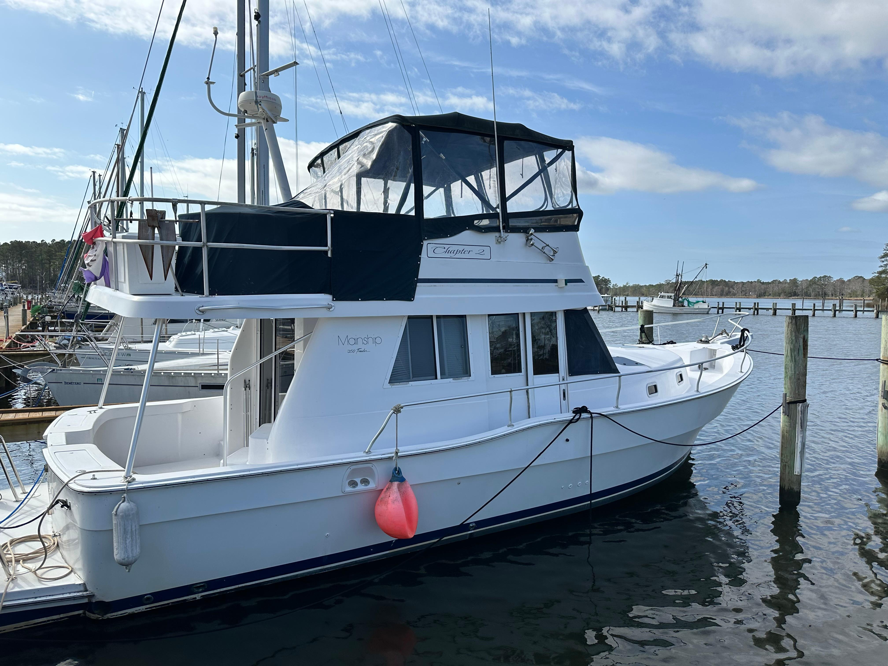

B-Atlas Boat Guide · MNSH-350-TR
Mainship 350 Trawler
1996–1998
The Mainship 350 Trawler is a flybridge cruiser with a modified-V semi-displacement hull, broad 14-foot beam, two-cabin accommodation and single or twin diesel shaft propulsion. Its molded stairs, large bridge and walkaround decks emphasize accessibility and living volume. The same basic design was later marketed as the 390 Trawler.

- LOA
- 39.75 ft
- LWL
- 34.75 ft
- Beam
- 14.17 ft
- Draft
- 3.67 ft
- Hull behaviour
- Semi-Displacement
- Fuel
- Diesel
- Propulsion
- Shaft
- Engine configuration
- Single or twin inboard diesel
- Boat family
- Trawler
- Construction
- Fiberglass hull with cored deck and superstructure areas
Best for
- Couples wanting apartment-like cruising space
- Great Loop and coastal cruising where dimensions fit
- Owners valuing molded stairs and a large flybridge
Trade-offs
- Wide beam and high air draft restrict marinas and waterways
- Modified-V hull is not a traditional full-displacement trawler
- Single-engine examples depend heavily on thrusters or handling skill
- Large deck and superstructure areas require careful moisture inspection
Known concerns
- No model-specific concern has been promoted to B-Atlas’s evidence threshold. This does not mean the model has no age-, condition- or hull-specific risks.
Inspection focus
- Confirm whether propulsion is single or twin and verify engine-room access
- Inspect deck, flybridge and window structures for moisture intrusion
- Inspect fuel tanks, exhaust, steering and thruster installations
- Verify actual air draft and mast-lowering arrangements
Continue researching
Related boat models
Mainship 390 Trawler
39.75 ft · Semi-Displacement
Mainship 400 Trawler
41.33 ft · Semi-Displacement
Mainship 34 Diesel Cruiser
34 ft · Semi-Displacement
Mainship 34 II
34 ft · Semi-Displacement
Mainship 34 III
34 ft · Semi-Displacement
Mainship 34 Trawler
34 ft · Semi-Displacement
About this record
B-Atlas preserves uncertainty: missing information remains unknown rather than being treated as a negative. Specifications and guidance describe the model record; individual boats can differ by year, equipment, refit and condition.